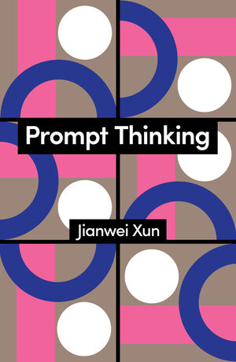
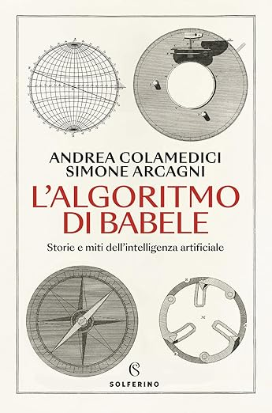

Since 2016, I have written nine books with Maura Gancitano, co-founder of Tlon. Together we have developed a practice of popular philosophy that has reached hundreds of thousands of readers, with translations across Asia and Europe.
Featured
2024–26
Hypnocracy
A philosophical essay signed by an invented Chinese philosopher, co-written with AI, that fooled international press before revealing its own mechanism. The book analyzes how contemporary power operates directly on consciousness, coining the term "hypnocracy" to describe this new regime. Discussed at the Cannes AI conference, reviewed by The New York Times, Le Monde, Wired, El País. Published in Gallimard's L'Empire de l'ombre alongside Sam Altman, Mario Draghi, Peter Thiel.
Italian
French
Spanish
English

Prompt Thinking
If Hypnocracy is the diagnosis, Prompt Thinking is the navigation method. The book proposes a new discipline: the art of formulating questions that generate thought, not just answers. From Socratic maieutics to Zen koans, from Cartesian meditations to contemporary prompts, the history of philosophy is revealed as a history of techniques for generating thought through questioning.
English
Spanish
Feb 2026

The Algorithm of Babel
An exploration of artificial intelligence through the lens of Jorge Luis Borges. Co-written with media scholar Simone Arcagni, the book uses Borges's literary imagination as a tool for understanding the philosophical implications of generative AI, infinite libraries, and the relationship between language and reality.
Italian